Understanding app architecture
Laying out what users are seeing today as a holistic system and figuring out ways to improve experience.
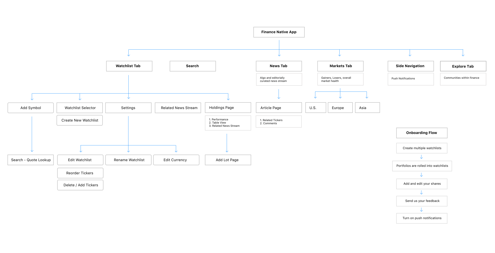Framing the problems
Understanding who our users are and what problems we should be solving for them.
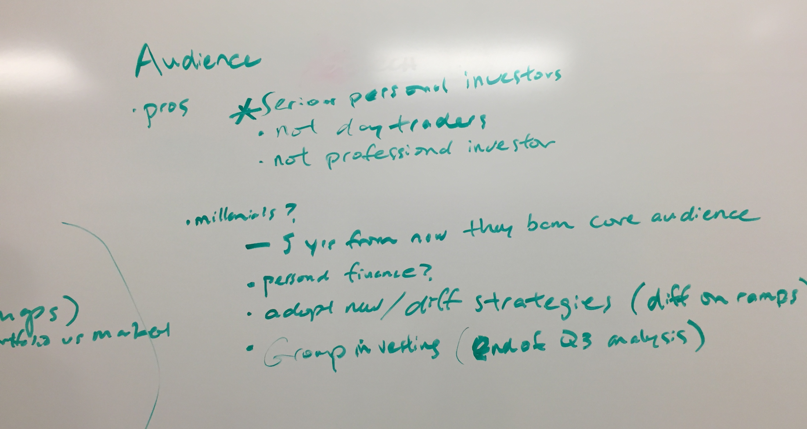 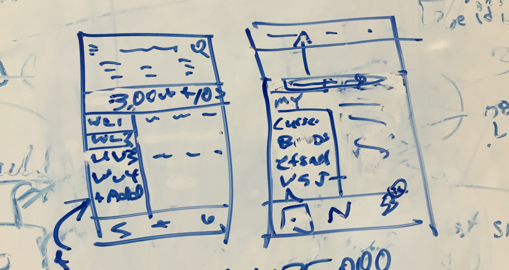 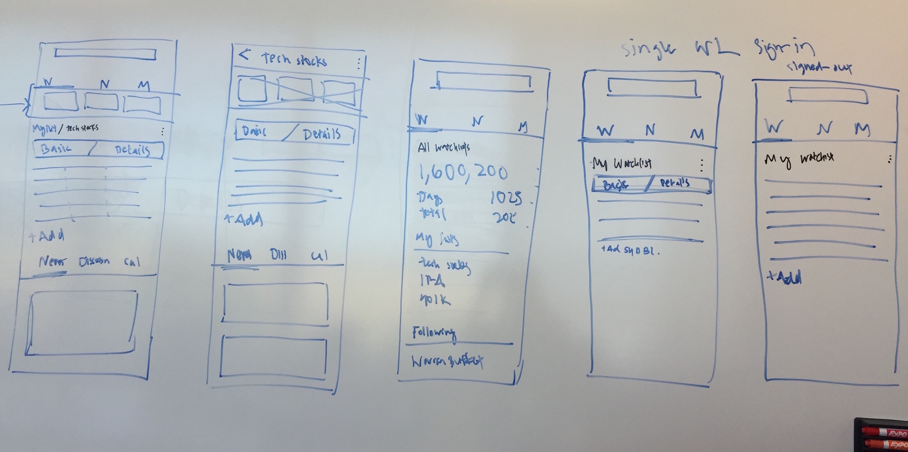Devising solutions for each feature
We explored different UI approaches for how users would access their holdings view.
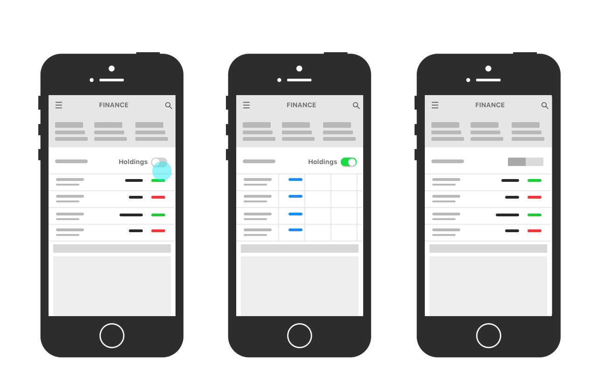The ability to add a new lot or edit an existing lot was a new feature since we added the holdings view.
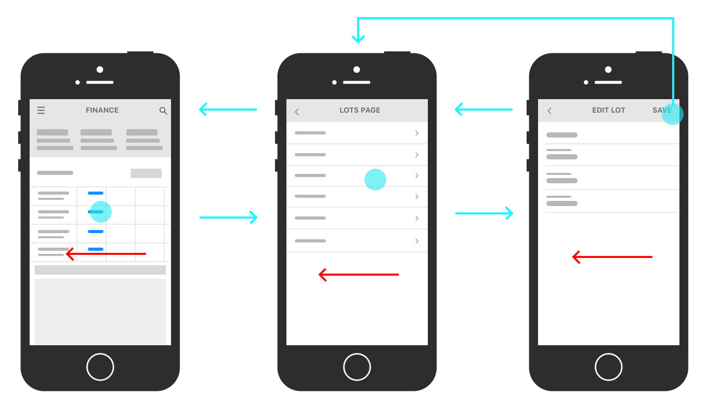High-fidelity & Prototyping
Illustrating the approaches through visual design & rapid prototyping.
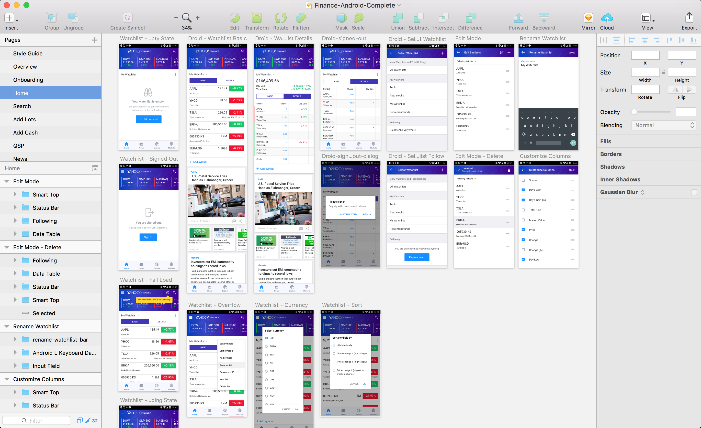
User Research & Iterating
Feature Request: Users wanted the ability to add multiple lists and holdings.
Solution: We added a holdings view and a multiple watchlist view.
Problem: Then users were not able to find the holdings view because the toggle was too small.
Solution: We changed the label to "Basic" and "Details" and made the toggle larger.
Feature Request: Users wanted to be able to see more market indicies while researching other quotes.
Solution: Our team did a hack-a-thon to introduce a market index carousel in the header.
Feature Request: We wanted users to stay engaged longer on our article pages.
Solution: We updated video to have picture-in-picture.
Exhausting all ways of user researching
Together as a team we were able to list out common themes by gathering data through surveys, beta testing, diary studies, and interviewing.
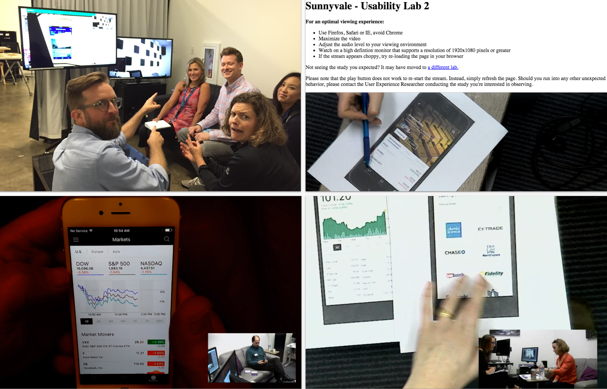Implementation & Specs
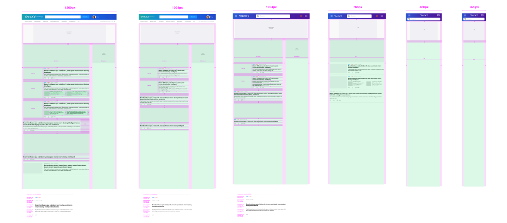 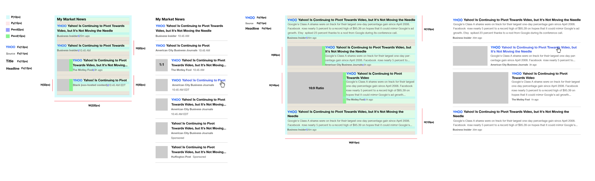 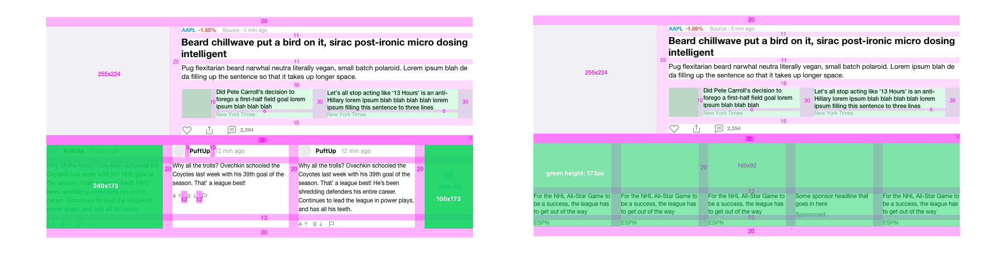 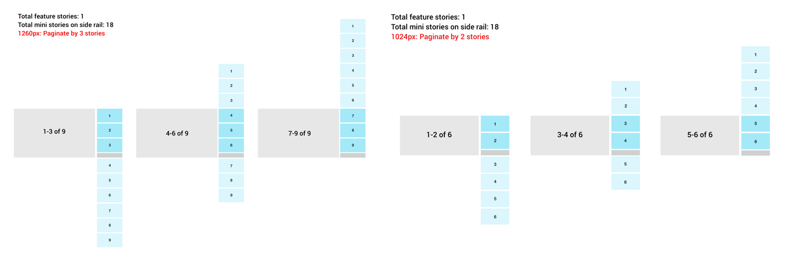Engineering, Design, & Product source of truth
For a project at this scale, organization and transparency is key to successful implementation.
The people behind Yahoo Finance
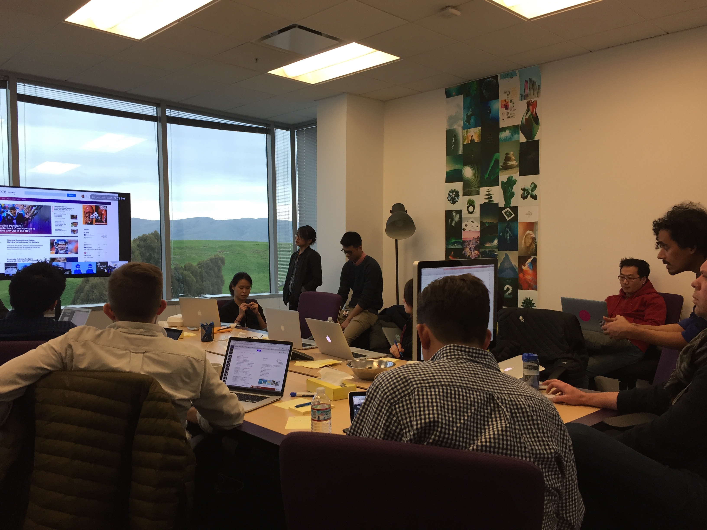Sunnyvale
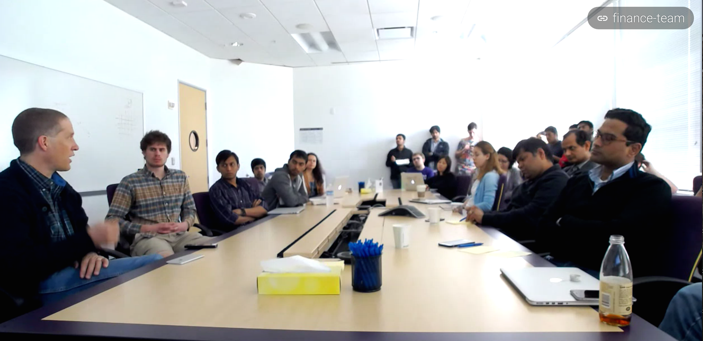New York
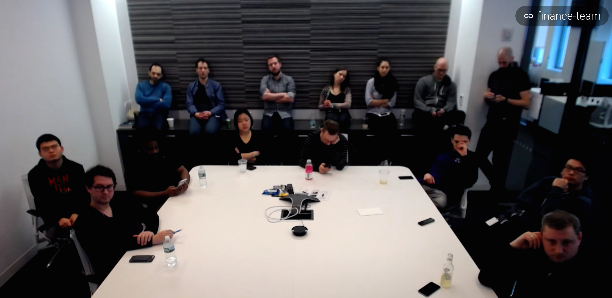